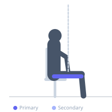
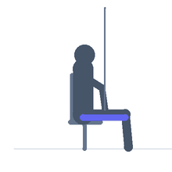

Exercise guide / Seated Hamstring Neural Flossing with Band
Seated Hamstring Neural Flossing with Band
Neural flossing (also called neural gliding) is a gentle mobilization technique that moves the sciatic nerve through its neural canal by alternating tension on opposite ends of the nerve. In the seated hamstring version, the exerciser alternately extends the knee (tensioning the sciatic nerve distally) and flexes the ankle into dorsiflexion while the hip remains flexed. This rhythmic 'flossing' improves neural mobility and reduces pain associated with sciatic nerve tension, hamstring injuries, or disc herniations causing radiculopathy.
Primary muscles
biceps femoris long head
semitendinosus
Secondary muscles
Equipment
No Equipment (Bodyweight)
Optional
Resistance Band (Loop / Mini Band)


Starting position
- Sit upright in a chair with both feet flat on the floor. Ensure a neutral or slightly extended spine — do not slump. Cross the working ankle over the resting thigh or simply let it hang, depending on the technique variant being used.
Setup
- No equipment needed. A chair that allows the foot to hang freely is ideal. The technique must be very gentle — neural flossing is NOT a stretching exercise and should never produce sharp, radiating, or electrical pain.
Steps
- Step 1: Sit tall in a chair. Extend one knee to straighten the leg as much as comfortable — this tensions the sciatic nerve.
- Step 2: Simultaneously point the toes (plantarflex the ankle) to reduce the neural tension slightly.
- Step 3: Bend the knee back to roughly 90 degrees while simultaneously dorsiflexing the ankle (pull toes toward shin).
- Step 4: Alternate between these two positions rhythmically — extend knee/plantarflex toes, then bend knee/dorsiflex toes. This is the flossing motion.
Coaching cues
- This is a gliding exercise, not a stretch — the movement should be fluid and gentle
- Mild tension is correct. Any sharp, electrical, or radiating sensation means you should stop
- Consistency over intensity — daily gentle flossing outperforms aggressive weekly sessions
Breathing
- Breathe continuously throughout. The movement should feel like gentle mobilization, not a stretch.
Range of motion
- Work only within the range that produces gentle tension and no pain. This range will improve as neural mobility increases.
Tempo
- 1 repetition = 1 full cycle (extend + return). Perform at a steady rhythm — approximately 1 second per position.
Common mistakes
- Forcing range that creates sharp, electrical, or radiating pain — stop immediately if this occurs
- Performing the exercise too aggressively — neural flossing should feel like a mild tension, not a hamstring stretch
- Holding the extended position rather than keeping the motion fluid and rhythmic
Safety
- CRITICAL: If the exercise produces sharp, shooting, or electric pain radiating down the leg, stop immediately and consult a physiotherapist
- Neural flossing should produce only mild tension — no pain
- Not suitable for anyone with known spinal instability or acute disc herniation without physiotherapy supervision
Training
- mobility: 10–20 reps
- endurance: 10–15 reps
- mobility: 2–3 sets
- endurance: 2–3 sets
- Rest: {'mobility': 60, 'endurance': 60}